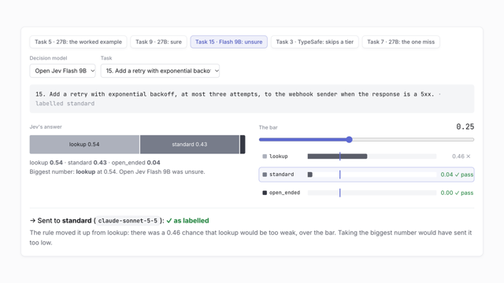
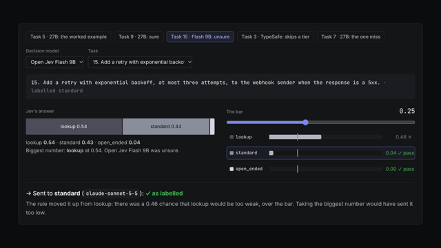

Noul yes / no
The probability that a statement about the state is true.
attempt: "a genuine attempt?" → 0.97
example from misconception-gates' design
System One models don't generate text. They answer a typed question about some state with a probability for every answer, in milliseconds. These experiments test where that's enough to stand in for a parser, a grader, a release manager, or the choice of which model to call.
jev-1.13.0),
model-router run of 2026-10-08.
I wanted a quick, reasonably informed gut check on whether this class of model is viable for small decisions that fixed rules can't make: which move a player meant, which model a sub-agent task needs, which misconception an answer shows.
Two of the four experiments have live runs so far. In both, a hosted model and two running on a laptop handled a small set of mostly clear cases without a costly mistake, and differed in how sure they were. That tells me the mechanism works. It isn't an accuracy figure, and the note on rigor says why.
Jev is TypeSafe's System One model. It never writes a reply. You send it some state and typed questions about that state, it returns a probability for every possible answer, and ordinary code decides what to do with those numbers. Open Jev serves the same API from open weights on your own machine.
It takes three kinds of question, and the experiments below use all three. TypeSafe's introduction covers the rest.
The probability that a statement about the state is true.
A probability for each option. It can only pick something that's on the list.
Where the input sits on an ordered scale, with a probability per level.
Each is a standalone directory with its own stack, a hypothesis, the checks that would confirm it, and tests that run without an API key. Skeleton means the design is in code and tested against scripted answers. Live means runs against real models are recorded, with dates. If one is close to a problem you have, the code is there to run against your own data.
An agent harness asks one Score question about a sub-agent's task, then takes the cheapest model whose chance of being too weak is acceptable. The orchestrator spends no tokens deciding.


One Jev call over the text of a sub-agent task chooses a model tier well enough to move a large share of work off the most capable model, while rarely sending a task to a model too weak for it.
Timings describe this setup, not how fast the models are.
A dungeon crawl whose parser understands whatever you type but can only choose moves the author wrote. Each turn, the possible moves become one Choice, plus "none of these".

Players type naturally with few dead ends, the game stays fully authored, and it's fast enough to feel like a parser, not a chat.
Timings describe this setup, not how fast the models are.
Read a learner's free-text answer for which misconception it shows, and send them to the part of the lesson written for it.
With four to six authored misconceptions per gate, one Jev call diagnoses free-text answers accurately enough to act on most of them automatically.
Decide the bump from the commits since the last tag. Code reads what messages declare, Jev judges what they don't, and a human sees only commits that are uncertain and could change the answer.
A single Jev call per commit agrees with the bump a maintainer would choose on commits without Conventional prefixes.
Each experiment's README states a hypothesis, the checks that would confirm it, and what is still open. An AI coding agent does most of the building, tests first, working to a short set of rules kept in the repository's AGENTS.md. One of them: loosening a check, or changing what an experiment is trying to show, is my decision and not the agent's.
A live run is a script that pins the model version and writes every answer to a file. Each results page is generated from those files, and the generator refuses to write if its totals differ from the ones the run saved. When a check gets evidence, the README records it with the date.
The code follows the same five rules in every experiment, so the model can be swapped and no test needs the network.
Code asks decide(state, questions) and gets typed answers back. One adapter calls Jev and a scripted one drives the tests, so no unit test calls the network or needs a key.
Thresholds, arithmetic, dates and counting stay in ordinary code. The model only makes the judgments, so a policy change is a code change, not a prompt rewrite.
Deterministic rules go first: a Conventional Commit prefix, the moves possible in a room. The model answers only what they leave undecided.
Act, ask or escalate by how sure the model is, with the bar set by the cost of being wrong. The crypt asks "did you mean?"; the router moves a task up a tier.
If the model is unreachable, each experiment falls back to what it did before: an authored "not possible" line, Conventional Commits only, the harness's default model.
Dated entries, newest first. Each experiment's README records its evidence the same way.
jev-latest, once the HTTP request moved off the main thread.
fuzzymatch library, now on the archive/fuzzymatch branch.
The goal was a gut check, so the rigor is pragmatic: enough to tell whether an idea deserves more work, not enough to quote a number from. I plan to formalize it as the experiments continue, and each README's Open list says what comes next.